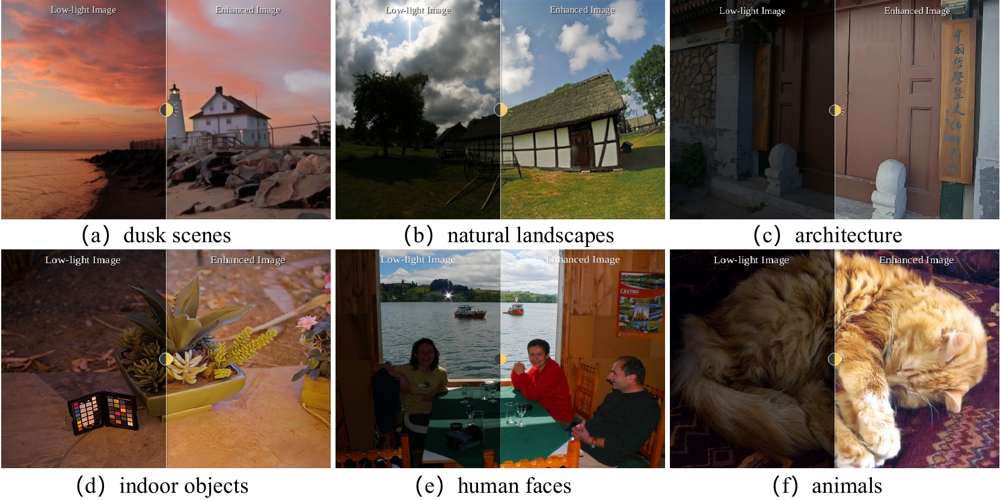

Results
Quantitative Results
| Method | LOLv1 | LOLv2-real | ||||
|---|---|---|---|---|---|---|
| PSNR | SSIM | LPIPS | PSNR | SSIM | LPIPS | |
| AGLLDiff | 19.83 | 0.814 | 0.194 | 19.99 | 0.844 | 0.192 |
| DARD | 21.14 | 0.835 | 0.143 | 22.18 | 0.877 | 0.135 |
Zero-shot low-light enhancement comparison on LOLv1 and LOLv2-real.
| Dataset | SegFormer + AGLLDiff mIoU | SegFormer + DARD mIoU | Relative improvement |
|---|---|---|---|
| LOLv1 | 21.32 | 27.31 | +28.10% |
| LOLv2-real | 28.09 | 35.13 | +25.06% |
Downstream semantic segmentation using enhanced images.
Qualitative Results

Representative enhancement results across real-world low-light scenes.

Visual comparison on the LOLv1 and LOLv2-real datasets.

Semantic segmentation results on low-light scenes.